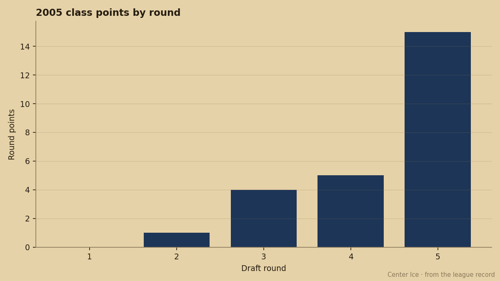
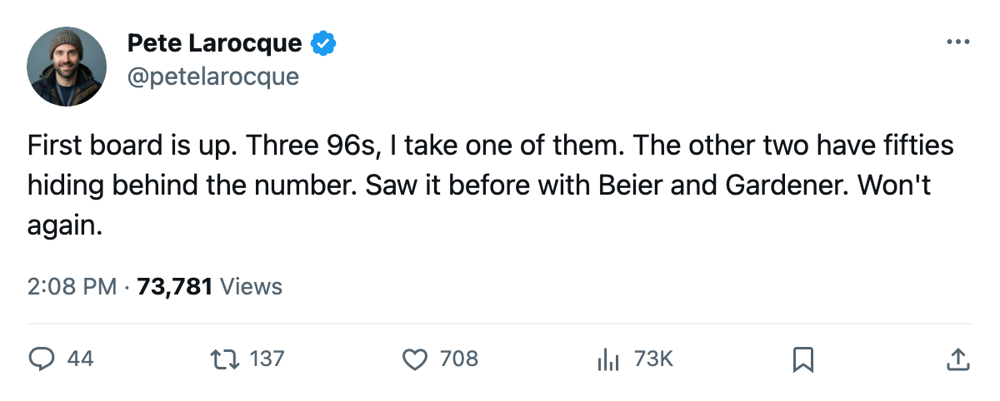
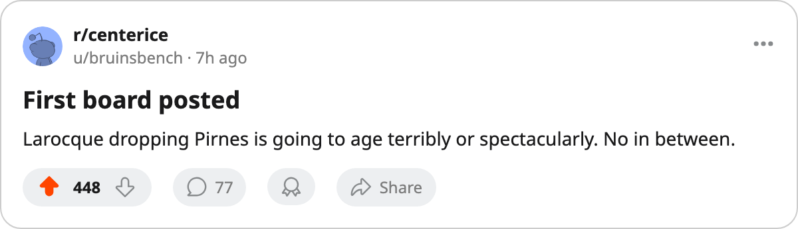

2006 Mock Draft 1.0: The First Board, and Two Drops
Five prospects carry a 95-or-better potential grade. Pete Larocque puts three of them behind a 91.
 Pete LarocqueScouting editor · The Prospect File
Pete LarocqueScouting editor · The Prospect FileI have not published a board yet. Here is the first one, for the 2006 draft, and it starts by cutting two men you might expect to see at the top.
The Junior Bureau has graded 40 prospects for the class. Five of them carry a potential number above 95: Toni Kuki at 99, Björn Lieder at 97, Sergej Balodis at 96, Tuomo Pirnes at 96, and Valeri Bunka at 96. The number says these are the players to take. I disagree about two of them, and the 2005 class is the reason.
Tim Gardener75 went 5th overall in June. The Bureau gave him a potential grade of 98. Six games in, he has 0 points and 4.5 minutes a night. Boris Bunka71 went 18th with a potential grade of 51, which is lower than half the first round, and he has played 6 games for  Detroit Red Wings at 10.5 minutes a night and scored nothing either. Neither number meant anything. When I build a board for June 2006, I go to the attributes and ignore the potential figure on top.
Detroit Red Wings at 10.5 minutes a night and scored nothing either. Neither number meant anything. When I build a board for June 2006, I go to the attributes and ignore the potential figure on top.
The drops
Tuomo Pirnes carries a 96. Look at what sits under it: SPEE 50, ACCU 50, SHPW 50, PASS 50, PUCK 50, CHKG 61. Five attributes at the floor of the scale. The only thing separating him from a blank slate is 11 points of checking. I do not know what the Bureau sees in that column that makes it project 96, and I am not building my board on a number I cannot trace. Pirnes goes 4th on mine, and I would slide him further if the class were thinner at center and left wing.
Sergej Balodis has a 96 with SPEE 52, ACCU 59, SHPW 50, PASS 55, PUCK 59, CHKG 60. He is a center with nothing above 60. That is a good center somewhere in the top 10. He is not the player the potential figure implies. I take him 5th, behind a winger I trust more.
The riser
Karel Kotalik carries a 91, which is 5 points below Pirnes and Balodis. His attributes: SPEE 64, ACCU 68, SHPW 73, PASS 65, PUCK 74, CHKG 84. He is the best-skating center in the class, he can shoot, and he checks like a defenseman. Kovalchuk won the Lady Byng at 90 overall with numbers built on speed and skill. Kotalik has the same profile at a younger age with more size behind the hit. He goes 2nd on my board, ahead of three men with higher potential numbers.
The rest of the top
At 1st I take Toni Kuki. The potential grade is the highest in the class, and unlike Pirnes, the attributes back it: SPEE 60, ACCU 60, PASS 62, PUCK 69, CHKG 50. He is not finished; the checking is below average for a left winger and the speed is good but not special. But the passing and puckhandling at 62 and 69 are real tools, and the 99 tells me the Bureau thinks they get better. I believe them here.
Björn Lieder at 97 is the best goaltender prospect I have seen from the Bureau in two years of reading its sheets. GSH 76, GSL 76, SSH 73, SSL 73, REBC 68, AGIL 72. That is a complete goaltender at 19. I take him 3rd.
Valeri Bunka at 96 is the winger I want in the top 5. SHPW 70, PUCK 71, CHKG 81. A winger who checks at 81 is a power forward. The speed at 61 and accuracy at 69 are above average. He is 19, born in 1987. I take him 5th behind Kotalik, Lieder, and Kuki, with Pirnes and Balodis behind him.
The board
| Pick | Team (projected) | Prospect | Pos | Potential | Key attributes |
|---|---|---|---|---|---|
| 1 |  Ottawa Senators Ottawa Senators | Toni Kuki | LW | 99 | PUCK 69, PASS 62 |
| 2 |  Atlanta Thrashers Atlanta Thrashers | Karel Kotalik | C | 91 | CHKG 84, PUCK 74, SHPW 73 |
| 3 |  Phoenix Coyotes Phoenix Coyotes | Björn Lieder | G | 97 | GSH 76, GSL 76, AGIL 72 |
| 4 |  Minnesota Wild Minnesota Wild | Tuomo Pirnes | LW | 96 | CHKG 61, everything else 50 |
| 5 |  Chicago Blackhawks Chicago Blackhawks | Valeri Bunka | LW | 96 | CHKG 81, SHPW 70, PUCK 71 |
| 6 |  Washington Capitals Washington Capitals | Sergej Balodis | C | 96 | PUCK 59, CHKG 60 |
| 7 |  Buffalo Sabres Buffalo Sabres | Lars Loof | G | 94 | GSH 61, GSL 59 |
| 8 |  Edmonton Oilers Edmonton Oilers | Vyacheslav Malevich | LW | 92 | SHPW 61, SPEE 55 |
| 9 |  New York Islanders New York Islanders | Marko Boman | LW | 92 | ACCU 65, SHPW 64 |
| 10 |  Mighty Ducks of Anaheim Mighty Ducks of Anaheim | Karl Jiranek | RW | 93 | SHPW 72, SPEE 66 |
The order follows current standings. Ottawa Senators has 5 points in 9 games. Atlanta Thrashers has 7 in 11. Phoenix Coyotes has 8 in 13. If those records hold, the first three picks land here.

Why this board is different
The Bureau's potential number is the last thing I look at. I read the attributes first, then check whether the potential number agrees with them. When it does, I trust it. When it does not, I write it off as a projection I cannot verify, and I build around what is on the page.
Kuki's 99 sits on attributes that are already good. Kotalik's 91 sits on attributes that are already better than anyone else in the class at his position. Pirnes' 96 sits on five fifties. That is why they are in this order.
The 2005 class has 25 points through 8 more days. Fifteen of them come from the fifth round. The first round has 0. The top 5 picks combined have 1 game between them where they scored anything, and that was pick 134, Mika Tirkkonen75, with 5 points in 4 games for New York Islanders. The players with the highest potential numbers in that class, Beier at 99, Leo Atonovich62 at 96, Tim Gardener at 98, have produced nothing measurable. Beier is unsigned.
I still believe the grades exist. The 2005 class just makes me read them differently. I will update this board when the Bureau revises the class, and if I am wrong about Pirnes I will say so. For now, the attributes are the only thing I trust.

